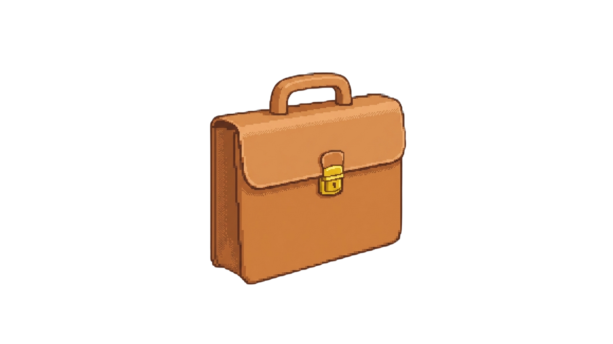
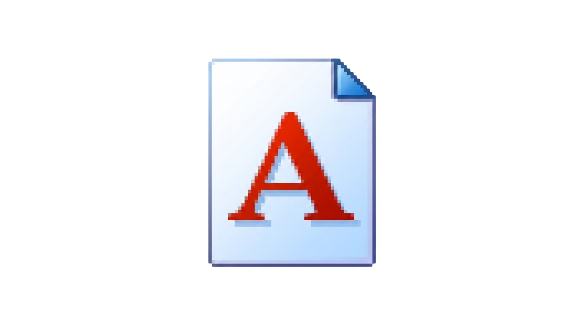

It gets easier. Every day it gets a little easier, but you gotta do it everyday. That's the hard part. But it does easier.
CRITICAL ERROR: No WebGL Detected
WebGL is required to run this site. Please enable it or switch to a browser which supports WebGL.


Double-click the Jessa folder to explore. Use the tabs to navigate.

Hi, I'm Jessa. I'm a front-end enthusiast who loves JavaScript, HTML, and CSS. I build playful, nostalgic web experiences that blend retro aesthetics with modern accessibility.
HTML, CSS, JavaScript, React, Accessibility, Pixel art
Projects will be listed here. Replace these placeholders with real project links and screenshots.
Here are some highlighted projects. Replace with real project links and screenshots.